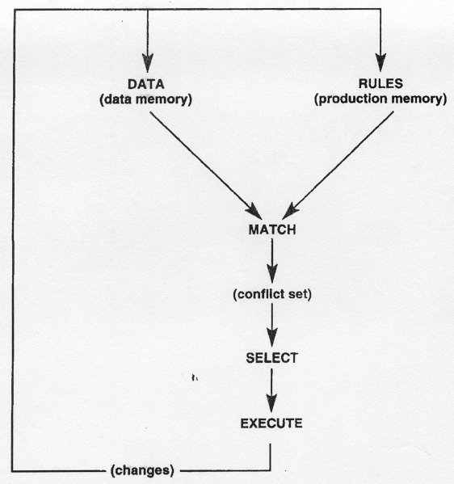

Rules Engines:
Logic As Data Structure
Online: malloc47.com/posscon2015/
About Me

Big Data-○-Software Development-○-Clojure
I do A.I.
Computer Vision-○-Image Processing-○-Machine Learning

What is a Rules Engine?
Related Terms
- Expert Systems (1970s-1980s)
- Knowledge Base
- Inference Engine
- Business Rules
- Rete Algorithm (1974-2010)
A Rules Engine is an...
Expert system that applies an inference engine to a knowledge base consisting of if/then rules and facts, executing arbitrary actions or inserting new facts when a rule matches.
In practical terms
- If/then rules: specified in a DSL and "compiled" into the knowledge base
- Fact: base language object (Java object, Ruby hash, Clojure defrecord, etc.)
- Knowledge base: special graph that connects rules and facts together
- Inference Engine: Rete Algorhtm
Rete Algorithm
- Latin for 'net' or 'comb'
- Represents rules as a (directed acyclic) graph
- Trades memory for increased speed
- Performance is (theoretically) independent of the total number of rules
- Forward chaining vs. backward chaining used by Prolog
Rete Algorithm Visualization
http://www.drdobbs.com/architecture-and-design/the-rete-matching-algorithm/184405218
Popular rules engines:
Rules Engine
Example
College Application Processor
- Facts: applicant, parents, grades
- Rules: acceptance criteria, financial aid criteria
Facts
(defrecord Applicant [name age])
(defrecord Grade [type score])
(defrecord Parents [income alumni?])
(defrecord Accept [])
(defrecord Aid [amount])
Must use facts for input and output
Rule 1
(defrule good-enough-grades
[Grade (= type :gpa) (> score 3.0)]
[:or
[Grade (= type :sat) (> score 1500)]
[Grade (= type :act) (> score 20)]]
=>
(insert! (->Accept)))
Rule 2
(defrule rich-parents
[Parents (> income 2000000)]
=>
(insert! (->Accept)))

Rule 3
(defrule aid-package
[Accept]
[Applicant (< age 26)]
[Parents (< income 60000)]
=>
(insert! (->Aid 20000)))
Run Rules Engine
(def facts
[(->Applicant "Phil" 22)
(->Parents 50000 false)
(->Grade :gpa 3.1)
(->Grade :sat 1650)])
(defn -main
(let [session
(-> (mk-session 'examples.college :cache false)
(insert-all facts)
(fire-rules))]
#_(print results here))
=>
Accepted: true
Aid : 20000
Performance
Why?
Rationale for Rules Engines
- Rules as first class
- Composable
- Testable
- Serializable
- Clean separation of data and logic
- Logic aggregation
- Scalable both horizontally and vertically
- Auditable (rule triggers can be "explained")
- Visualizable (rules are data; can be graphed)
When to use a rules engine?
- Lots of branching logic in rules
- New entities may be introduced/removed
- Rules constantly changing (commit hot-spots)
- Non-technical stakeholders need to change rules
- Your system has logical knots: complex dependencies on arbitrary logic and data
Resources
- http://www.jessrules.com/docs/71/rete.html
- http://herzberg.ca.sandia.gov/guidelines.shtml
- http://www.oracle.com/technetwork/articles/geminiuc-097530.html
- https://docs.jboss.org/drools/release/5.5.0.Final/drools-expert-docs/html_single/
- http://www.infoq.com/articles/Rule-Engines
- http://en.wikipedia.org/wiki/Rete_algorithm
- http://martinfowler.com/bliki/RulesEngine.html
- http://dwhbp.com/post/2011/10/30/Implementing-a-Business-Rule-Engine.aspx
- http://reports-archive.adm.cs.cmu.edu/anon/1995/CMU-CS-95-113.pdf